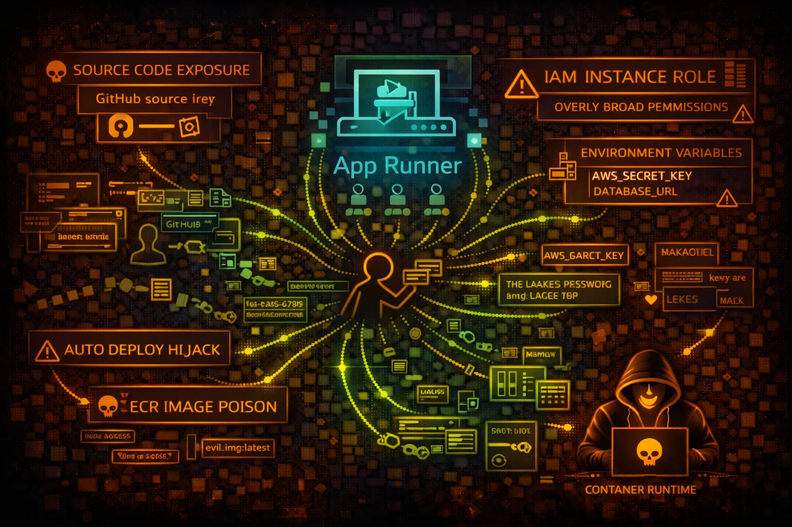

AWS App Runner Security
CONTAINERS
AWS App Runner deploys containerized web apps and APIs from source code or container images. Security risks include environment variable exposure, IAM role abuse, and source code theft.

AWS App Runner deploys containerized web apps and APIs from source code or container images. Security risks include environment variable exposure, IAM role abuse, and source code theft.
Connects to GitHub repositories for automatic builds and deployments. Stores GitHub connection credentials. Build logs may contain sensitive information.
Pulls images from ECR (public or private). Auto-deploys on image push. Service runs with instance role that can access other AWS services.
App Runner simplifies deployment but abstracts security controls. Environment variables, IAM roles, and source code connections are common attack vectors for credential theft and lateral movement.
aws apprunner list-servicesaws apprunner describe-service \\
--service-arn SERVICE_ARNaws apprunner list-connectionsaws apprunner list-auto-scaling-configurationsaws apprunner list-vpc-connectorsaws apprunner describe-service \\
--service-arn SERVICE_ARN \\
--query 'Service.SourceConfiguration'aws apprunner describe-custom-domains \\
--service-arn SERVICE_ARNaws apprunner list-operations \\
--service-arn SERVICE_ARNcurl http://169.254.170.2$AWS_CONTAINER_CREDENTIALS_RELATIVE_URIaws logs get-log-events \\
--log-group-name /aws/apprunner/SERVICE/BUILDaws logs get-log-events \\
--log-group-name /aws/apprunner/SERVICE/application{
"Effect": "Allow",
"Action": "apprunner:*",
"Resource": "*"
}Full App Runner access - can create/modify services and view secrets
{
"Effect": "Allow",
"Action": [
"apprunner:DescribeService",
"apprunner:ListServices"
],
"Resource": "arn:aws:apprunner:*:*:service/prod-*"
}Only describe specific services matching pattern
{
"Effect": "Allow",
"Action": [
"s3:*",
"dynamodb:*",
"secretsmanager:*"
],
"Resource": "*"
}Instance role with broad access - SSRF leads to full compromise
{
"Effect": "Allow",
"Action": [
"s3:GetObject"
],
"Resource": "arn:aws:s3:::app-assets/*",
"Condition": {
"StringEquals": {"aws:SourceVpc": "vpc-xxx"}
}
}Instance role limited to specific bucket with VPC condition
Store secrets in Secrets Manager instead of environment variables.
aws secretsmanager create-secret --name app/database --secret-string ...Apply least privilege to instance role. Only grant required permissions.
Use VPC connector to restrict network access and enable private connectivity.
Associate WAF WebACL with App Runner service for application-layer protection.
Enable tracing and logging but ensure no secrets in log output.
Audit build logs for credential exposure. Use secrets in build environment.